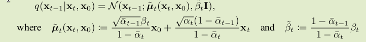

前向过程
原始数据记为x0，前向过程q就是逐步加上不同强度的高斯噪声
q(xt∣xt−1)=N(xt;1−βtxt−1,βtI)
也就是说，xt=1−βtxt−1+βtϵt，ϵt∼N(0,I)
这一步就是某种扩散。βt反映了噪声的强度，至于xt前面要乘上1−βt，应该是为了保持图像的“能量”总体上不变。可以给定x0，xt
xt=(1−βt)(1−βt−1)…(1−β1))x0+βtϵt+βt−1ϵt−1+⋯+β1ϵ1
每一步的噪声都是独立的。两个独立的高斯分布的线性组合还是高斯分布。
xt=∏(1−βt)x0+∏βtϵˉt
假设每一步增加的噪声都很小，方差的乘积可以忽略不计，可以近似写成。
q(xt∣x0)=N(xt;αˉtx0,(1−αˉt)I)
其中αˉt=∏s=1t(1−βs)，这种写法可以简化后面的公式。
上面的公式表明，前向过程其实是个Markov过程，下个状态xt只依赖上一个状态xt−1。联合分布可以直接写出来
q(x0:T)=q(x0)t=1∏Tq(xt∣xt−1)
反向过程
直接假定反向过程的状态转移概率也是某种高斯分布，用参数为θ的神经网络拟合这个分布的均值和协方差。给定xt，预测xt−1，用高斯分布去拟合xt−1在给定xt之后的后验概率分布。
p(xt−1∣xt)=N(xt−1;μθ(xt,t),Σθ(xt,t))
反向过程从xT出发，反向预测x0。因为加了很多噪声，可以认为p(xT)∼N(0,I)
可见，也是Markov过程，联合分布同样可以直接写出来。
p(x0:T)=p(xT)t=1∏Tp(xt−1∣xt)
损失函数
有个前向过程和反向过程，我们直接把x1:T当作是隐变量，x0是显变量，直接套用ELBO作为优化目标，就能同时最大化似然函数，最小化KL散度。
Ex1:T∼q(x1:T∣x0)[logq(x1:T∣x0)p(x0∣x1:T)p(x1:T)]
把上面的联合分布公式代进去
Ex1:T∼q(x1:T∣x0)[log∏t=1Tq(xt∣xt−1)p(xT)∏t=1Tp(xt−1∣xt)]
展开成积分
I1=∫q(x1:T∣x0)log∏t=1Tq(xt∣xt−1)p(xT)∏t=1Tp(xt−1∣xt)dx1:T
应用一下贝叶斯公式
q(xt∣xt−1)=q(xt−1)q(xt−1∣xt)q(xt)
但是q(xt)、q(xt−1)是没意义的，此时应该意识到x0要作为条件才对。
刚好根据Markov性，q(xt∣xt−1)=q(xt∣xt−1,x0)。所以
q(xt∣xt−1)=q(xt∣xt−1,x0)=q(xt−1,x0)q(xt−1∣xt,x0)q(xt,x0)
代入上面的方程，神奇的事情就发生了
∫q(x1:T∣x0)logq(x1∣x0)∏t=2Tq(xt−1,x0)q(xt−1∣xt,x0)q(xt,x0)p(xT)∏t=1Tp(xt−1∣xt)dx1:T
有点乱，整理一下
∫q(x1:T∣x0)logq(x1∣x0)∏t=2Tq(xt−1∣xt,x0)∏t=2Tq(xt∣x0)p(xT)∏t=1Tp(xt−1∣xt)∏t=2Tq(xt−1∣x0)dx1:T
注意到，∏t=2Tq(xt−1∣x0)就是q(x1∣x0)∏t=2T−1q(xt∣x0)，可以一下子消掉很多因子。
∫q(x1:T∣x0)logq(xT∣x0)∏t=2Tq(xt−1∣xt,x0)p(xT)∏t=1Tp(xt−1∣xt)dx1:T
拆成三项之和。
第一项，利用q(x1:T∣x0)=q(x1:T−1∣xT,x0)q(xT∣x0)，改变积分顺序，再根据概率密度归一化的性质：
==∫q(x1:T∣x0)logq(xT∣x0)p(xT)dx1:T∫q(xT∣x0)logq(xT∣x0)p(xT)dxT−KL(q(xT∣x0)∥p(xT))≜−LT
第二项，地位相当于VAE当中的重构项。
==∫q(x1:T∣x0)logp(x0∣x1)dx1:T∫q(x1∣x0)logp(x0∣x1)dx1Ex1∼q(x1∣x0)[logp(x0∣x1)]≜−L0
第三项
===∫q(x1:T∣x0)logt=2∏Tq(xt−1∣xt,x0)p(xt−1∣xt)dx1:Tt=2∑T∫q(x1:T∣x0)logq(xt−1∣xt,x0)p(xt−1∣xt)dx1:Tt=2∑T∫q(xt−1∣xt,x0)logq(xt−1∣xt,x0)p(xt−1∣xt)dxt−1−t=2∑TKL(q(xt−1∣xt,x0)∥p(xt−1∣xt))≜−t=2∑TLt−1
总的loss如下，最小化这个loss就是最大化ELBO。
L=t=0∑TLt
至此loss当中的各项都有明确的意义。Lt就代表t步对应的损失。
这个损失函数是可以计算的。唯一一个看起来没法直接算出来的是q(xt−1∣xt,x0)，但是我们知道q(xt−1∣x0)和q(xt∣x0)，用一下条件概率公式就能算出q(xt−1∣xt,x0)。另外，这两个都是参数已知的高斯分布，所以其实条件分布的参数可以直接套公式算出来。

alt text
从概念上看，前向是x0→x1→⋯→xT，反向则是反过来。如果不看第一次扩散，变成从x1出发，前向是x1→x2→⋯→xT，这是可看作另一个扩散过程，起点是x1。如果我们递归地进行思考，照理说上面的ELBO应该可以继续拆分。并且，参考VAE的ELBO，也应该有重构项Eq[p(x0∣x1)]。
我们应该可以任意地把整个过程的链条从中间某个位置拆开，切开的位置是显变量，右边是隐变量，左边是条件。但是推了半天，还是得从答案出发硬凑出一个结果，推导好像不是特别直观。